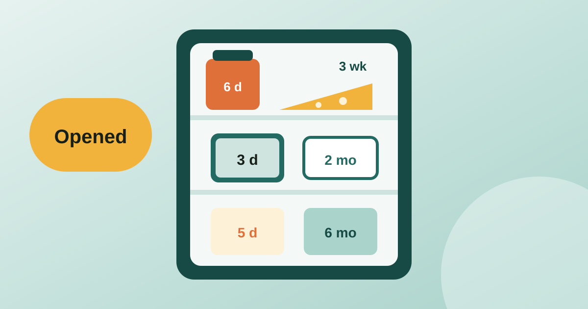

Passport, ID and licence expiry: when to renew and how to never miss it
An expired passport is not found out at home, it is found out at the airport. Here is when to renew each document and how to get a reminder long before it matters.
Read article
Once opened, most fridge foods last days to a few months, not the time printed on the pack: cooked leftovers 3 to 4 days, opened jarred sauce about a week, mayonnaise up to 2 months, jam and ketchup around 6 months. The best before or use by date on the label is for an unopened pack. Opening it starts a new, shorter clock, and almost nobody tracks that one. Below is a chart of typical times and a simple way to keep track.
These are typical guideline times for a fridge at 4 °C (40 °F) or colder. They come from general food safety advice, so if the label gives a "use within X days of opening" line, follow the label.
| Food | Typical time once opened |
|---|---|
| Cooked leftovers | 3 to 4 days |
| Opened tinned food (moved to a container) | 3 to 4 days |
| Sliced deli meat | 3 to 5 days |
| Milk | 3 to 7 days, or the label |
| Jarred pasta sauce | 5 to 10 days |
| Hard cheese (cut block) | 3 to 4 weeks |
| Mayonnaise (jar) | Up to 2 months |
| Ketchup | About 6 months |
| Jam or jelly | About 6 months |
The difference between the two label types matters too. Our guide to best before vs use by dates explains which ones are about quality and which are about safety.
Days Until is an expiry tracker that records the opened date, the quantity and typical shelf life for fresh food, then sorts everything by what runs out first. You can scan a label's date with on-device text recognition, and reminders arrive 30 days, 1 week and 1 day before by default. There is no item limit, no account and no ads. The same list can hold medicine, cosmetics and documents, for example the dates in our guide to passport, ID and licence expiry. More guides are in the home and expiry tracking category, and the free days until calculator counts the days to any date.
Most food safety guidance says 3 to 4 days in a fridge at 4 °C (40 °F) or colder. Cool them quickly, store them covered and reheat until steaming hot.
No. The printed date is for an unopened pack stored as directed. After opening, follow the 'use within X days of opening' line on the label, which is usually shorter.
Write the opened date on the lid with tape and a marker, or note it in an expiry tracker. Days Until has an opened date and shows a countdown from it.
Not reliably. Some bacteria that cause food poisoning do not change smell, taste or look. Use the date, the storage time and the label, and throw out food you are unsure about.
Published: . More in Home & expiry tracking or all articles.